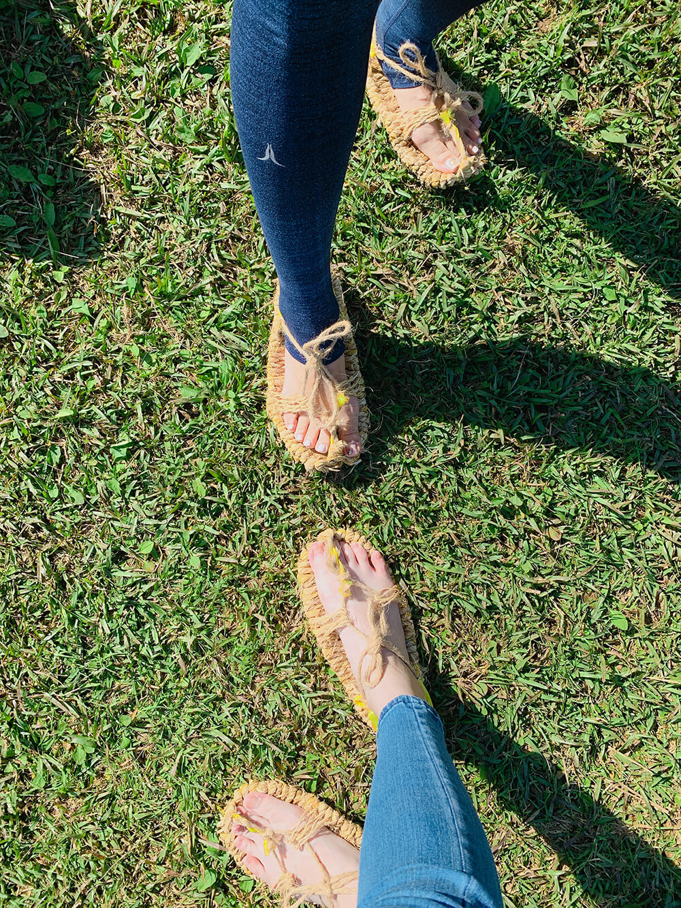

穿草鞋，爬草山
青年。壯遊。臺灣
written by VC ｜ 2022.10.18
本週來到我的母校所在地──陽明山，因緣際會下參加了臺北古憶青年壯遊-魚路古道賞芒祭一日遊。今日的包套行程總價500元，到底有沒有物超所值呢，讓我們繼續看下去。
劍潭捷運站1號出口
個人評分：4
- 地址：台北市士林區劍潭路
- 劍潭捷運站算是很大的站了，緊鄰士林夜市，也是文化、華岡藝校等要往陽明山上去的學生會搭車的地方，最重要的是，很多要去陽明山爬山、泡溫泉的旅客也會在這站搭車。
2019 女生都該要有一雙...草鞋？!
- 這次的活動於早上八點在劍潭1號出口集合，點完名，工作人員馬上就發了15元(搭公車)，還有一雙草鞋。說真的，我這輩子沒看過有人穿草鞋，更別說自己還擁有一雙，但貌似還需要一道工序才能穿在腳上。
擎天崗大草原
個人評分：4.5
- 地址：台北市士林區菁山路101巷246號
- 抵達擎天岡後，導覽先把我們帶到大草原前教我們穿草鞋，並說了有關於擎天岡的故事。
- 這次活動人數約莫25人，因為目標是讓青年認識台灣，所以年齡限制在35歲以下。
{kind=link}
很活潑的導覽大哥大姐
兩位導覽員都有經過陽明山國家公園導覽員培訓，也有一些訪間協會與營建署合作開辦課程，我後來也有參加藍染學會承辦的陽明山國家公園環境解說教育培訓。
當年只要付$1,000元包車包便當，跟很多大哥大姐玩學習了半年。
指導穿草鞋
因為拿到的草鞋還需要進行一道加工才能上腳，大家很專心的在穿繩子。
舒適通風解放雙腳
穿好以後馬上來發一張美照，透心涼又接地氣。可能有人會問了：「難道不會刺刺的嗎？」，其實不會，感覺還可以來一場三對三鬥牛。
草山穿草鞋
花了大概10分鐘穿繩，聽大哥大姐講，這樣一雙也不便宜，約莫百來塊。
一起搭車的女生搭配legging，覺得有趣找我一起合照一張，這時候她發現我站的位子擋到陽光，於是她跟我說：你逆。
體驗完穿草鞋後就開始魚路古道之旅。首先先經過擎天崗涼亭，看到對聯馬上就拍照發給我中國的友人看看。
我們是從嶺頭喦土地公廟旁邊的入口進去的，這一段算是日人路。
金包里大路?魚路古道?日人路？
簡單來說金包里大路就是魚路古道，給人走的;穿插著另一條叫日人路，日治時期給大砲走的。人走的階梯多，砲走的路較平緩，建議老人家可以走日人路喔!
草上飛
為了體驗早期人民由金山運送魚貨、茶葉等物資至士林時走的路、穿的鞋，有人就直接穿草鞋走完全程了，據他們說，不滑且舒適。
金包里大路城門
現在看到的城門是陽明山國家公園修建給遊客看的，往城門後面看會看到原始城門遺跡喔！
陽明山魚路古道芒草季
今天的天氣真的很好，人品爆發啊！
在擎天崗時有在販賣部買一杯咖啡，從此以後我都自己帶咖啡上去。後來為期半年的導覽培訓，我每次都買一個御飯糰，兩顆茶葉蛋，一瓶黑咖啡，一瓶礦泉水當午餐。
吃完午餐後，繼續往下走，要走到上磺溪停車場
國家公園的一切，你不能帶走
- 老實說我分不太清楚這是蛇乾還是蛇皮乾，可能要問Takeshi小剛了。
本來活動是安排兩人一間湯屋(出發前有通知帶泳衣)，但是到了現場，因為還剩很多空的湯屋，所以讓我們一人一間，泡湯一小時。
這次的文長慎入，不對，你已經看完了。來一張新朋友合照結束這週遊記！